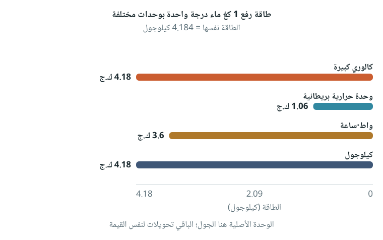

وحدات الطاقة ومقاييس درجة الحرارة
Energy Units and Temperature Scales
الطاقة تُكتب بأربع وحدات شائعة: الجول، والكالوري (4.184 جول)، والوحدة الحرارية البريطانية (1,055 جول)، والكيلوواط·ساعة (3.6 ميغاجول). ودرجة الحرارة تُقاس بمقاييس تنزلق نقطة صفرها: 25 °م = 298.15 كلفن = 77 °ف. الخلط بين الوحدات أشيع سبب لأخطاء الحسابات الحرارية، لا الفيزياء.
افتح جدولًا حراريًا فتجد الحرارة النوعية للماء 4.18 ك.ج/كغ·كلفن، وفي جدول آخر 1 كالوري/غ·°م، وفي ثالث 1 BTU/(lb·°F). الأرقام الثلاثة تعبّر عن الخصيصة نفسها بوحدات مختلفة، ومن يعوّض في معادلة واحدة مزيجًا منها يحصل على رقم لا معنى له. الكلفة العملية لهذا الخطأ ليست أكاديمية: مبادل حراري مُقاس بالـBTU وحُمّله بالكيلوواط، أو فاتورة كهرباء تُقارن بحساب طاقة بالجول، تعطي تقديرًا خاطئًا بمعامل 3.6 أو 1055. والأخطر في مقاييس الحرارة: الكلفن والصيغة المطلقة. أغلب قوانين الديناميكا الحرارية تحتاج درجة حرارة مطلقة؛ فإن عُوّضت بالسيلزية انقلبت النتائج، كأن تصبح كفاءة كارنو أكبر من 100% بلا تحذير.
كيف تعمل الظاهرة؟
الجول هو الوحدة الأساسية: كيلوغرام واحد يتسارع مترًا في الثانية المربعة على مسافة متر. والكالوري مشتقة من تسخين الماء، والوحدة الحرارية البريطانية من تسخين الرطل، والكيلوواط·ساعة من قدرة كهربائية لساعة — أي أنها وحدات طاقة رغم أن أسماءها توحي بغير ذلك. أما مقاييس الحرارة فهي محاور متزحلقة: الكلفن يبدأ من الصفر المطلق، والسيلزية تزيحه 273.15، والفهرنهايت تزيح وتغيّر حجم الدرجة (1 °ف = 5/9 °م). ولهذا تتبدل الفروق أيضًا لا القيم المطلقة وحدها.
العلاقة بالأرقام
1 كالوري = 4.184 جول؛ 1 BTU = 1,055 جول ≈ 1.055 ك.ج؛ 1 كيلوواط·ساعة = 3.6 ميغاجول. وللمقارنة بوحدة واحدة: 1 كيلو كالوري = 4.184 ك.ج، و1 واط·ساعة = 3.6 ك.ج. و25 °م = 298.15 كلفن = 77 °ف. وفارق درجة واحدة مئوية = 1.8 فهرنهايت، وفارق درجة واحدة مئوية = كلفن واحد بالضبط. أما الطاقة لكل كتلة فتحتاج معاملًا إضافيًا عند التحويل من الرطل (1 lb = 0.4536 كغ) ومن °ف إلى °م.
مفاهيم متقاربة
درجة الحرارة ليست طاقة: الكأس والمغسلة قد تكونان عند 20 °م، لكن طاقة المغسلة أكبر بكثير. والحرارة (Q) طاقة منقولة، ودرجة الحرارة (T) حالة. ومن هنا لزوم التفريق بين السيلزية والفهرنهايت عند حساب الفروق: فارق 10 °م يساوي 18 °ف و10 كلفن. وتمييز آخر: الوحدة «كيلوواط·ساعة» ليست «كيلوواط لكل ساعة»؛ الأولى طاقة والثانية معدل تغير قدرة، والخلط بينهما خطأ شائع في قراءة عدادات الأحمال.
حدود التطبيق
الكلفن مطلقة لكنها ليست حدًّا فيزيائيًا للسالب في كل الأنظمة: بعض الأنظمة (توزيعات سكانية، مغناطيسية) فيها تعريفات درجة حرارة سالبة لا تعني طاقة سالبة. وعند درجات عالية جدًا تفقد الحرارة النوعية ثباتها وتصبح دالة لدرجة الحرارة (الاهتزازات والالكترونات)، فلا تصلح القيم الجدولية. وفي التحويلات الصناعية يكون الخطأ الأكبر من التقريب لا من الوحدة، فتُدوَّن الوحدة الأصلية للقياس ويُجرى التحويل مرة واحدة بنهاية الحساب.

| الكمية | القيمة | المصدر |
|---|---|---|
| الكالوري بالجول | 4.184 جول | [1] |
| الوحدة الحرارية البريطانية بالجول | 1,055 جول | [1] |
| الكيلوواط·ساعة بالميغاجول | 3.6 ميغاجول | [1] |
| 25 °م بالكلفن | 298.15 كلفن | [2] |
| 25 °م بالفهرنهايت | 77 °ف | [2] |
المصادر
- 1 College Physics 2e — 14.1 Heat — OpenStax. openstax.org/books/college-physics-2e/pages/14-1-heat · اطُّلع عليه 2026-11-19
- 2 NIST SI Units — kelvin and derived units — NIST. www.nist.gov/pml/owm/metric-si/si-units · اطُّلع عليه 2026-11-19
استشهد بهذا المصطلح
الصيغتان مبنيتان من بيانات الصفحة نفسها: العنوان والتاريخ ورابط النسخة المنشورة.
وحدات الطاقة ومقاييس درجة الحرارة — Energy Units and Temperature Scales. (2026). ديوان المعرفة — انفراد. https://infiradev.com/diwan/terms/energy-units-temperature-scales.html
@misc{energy-units-temperature-scales2026,
title = {وحدات الطاقة ومقاييس درجة الحرارة},
titleaddon = {Energy Units and Temperature Scales},
howpublished = {{ديوان المعرفة — انفراد} — مرجع علمي عربي},
year = {2026},
url = {https://infiradev.com/diwan/terms/energy-units-temperature-scales.html},
urldate = {2026-11-19},
note = {مراجعة علمية: عبدالله الهويدي — مراجعة في تطبيق انفراد}
}
راجعه: عبدالله الهويدي — مراجعة في تطبيق انفراد · 2026-11-19 · آخر تحديث 2026-11-19